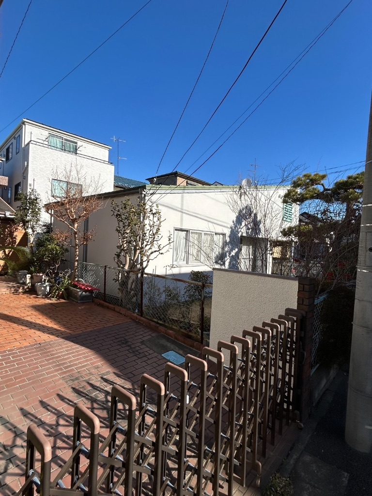
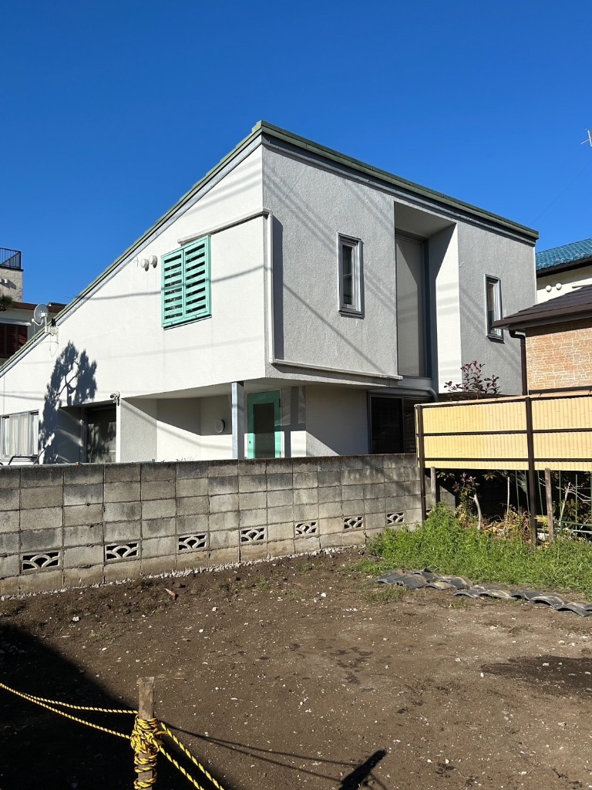

施工概要
地域
川崎市麻生区
築年数
築15年
工事内容
外壁・屋根塗装工事
工期
20日間
施工費用（税込）
132万円
外壁・屋根塗装工事（足場・高圧洗浄・下地処理・塗装3回塗り）
💰 定期メンテナンスのメリット
築10〜15年での塗装工事は、雨漏りを未然に防ぐ最適なタイミング。劣化が進む前の対策で、将来の大規模修理を回避できます。
点検のきっかけ
お客様のご依頼
「築15年を迎え、時期的に見てもらいたい」とインターネットからご連絡をいただきました。
- 特に雨漏りの症状はない
- 外壁の色褪せが気になってきた
- 近隣で塗装工事を見かけて、うちも時期かなと感じた
- 将来の雨漏りを予防したい
調査結果
現地調査の結果、今が塗装の最適なタイミングと判断しました。
- 外壁の劣化サイン：チョーキング現象（触ると白い粉がつく）が発生
- コーキングの劣化：目地部分にひび割れ・硬化が見られる
- 屋根塗装の色褪せ：防水性能が低下している兆候
- 雨樋の汚れ：定期的な清掃が必要
- 雨漏りのリスク：あと2〜3年放置すると雨漏りの可能性大
定期メンテナンスの重要性
築10〜15年は塗装のベストタイミング。劣化が進む前に塗装すれば、下地が傷んでいないため工事費用を抑えられ、仕上がりも美しく長持ちします。「雨漏りしてから」では手遅れです。
施工内容
1. 足場設置・養生
- 建物全体に足場を設置（安全作業のため）
- 窓・玄関・植栽をしっかり養生
- 近隣への挨拶・工事説明を徹底
2. 高圧洗浄
- 外壁・屋根の汚れ・コケ・カビを徹底洗浄
- 古い塗膜の浮きをしっかり除去
- 洗浄後、十分に乾燥（2日間）
3. 下地処理
- コーキング打ち替え：全ての目地・窓枠周りを新規打ち替え
- ひび割れ補修：外壁の細かいひび割れをシーリング充填
- ケレン作業：錆び・塗膜の剥がれを研磨処理
- 下地調整：凹凸をパテで平滑に
4. 外壁塗装（3回塗り）
- 下塗り：シーラーで密着性を向上
- 中塗り：高耐久シリコン塗料で防水層を形成
- 上塗り：仕上げ塗装で美観と耐久性を確保
- 色：ホワイト系（清潔感・明るさ重視）
5. 屋根塗装（3回塗り）
- 下塗り：屋根専用プライマーで密着
- 中塗り・上塗り：遮熱・防水塗料で耐久性向上
- 雨樋：内部清掃・外部塗装
6. 付帯部塗装
- 雨樋・破風板・軒天の塗装
- 配管カバー・雨戸の塗装
- 鉄部（フェンス等）の防錆塗装
7. 最終確認・足場解体
- 塗装のムラ・塗り残しを徹底チェック
- お客様と一緒に仕上がりを確認
- 足場解体・清掃
- 保証書の発行
施工写真

施工後：真っ白な外壁に生まれ変わり（正面）

施工後：庭側からの全景

施工後：側面・配管周りも丁寧に塗装

施工後：玄関側からの全景

施工後：外壁と基礎部分の塗り分け
この工事のポイント
築15年は塗装のベストタイミング
劣化が進む前の「予防メンテナンス」が、将来の雨漏りを防ぎ、修理費用を大幅削減できます。
高耐久シリコン塗料で10年保証
外壁・屋根ともに高耐久シリコン塗料を採用。紫外線・雨風に強く、10年間の保証付きです。
コーキング全面打ち替えで防水性能向上
目地・窓枠周りのコーキングを全て新品に打ち替え。雨水の浸入を完全にシャットアウトします。
工期20日間でスピード完工
足場設置から解体まで20日間。天候に左右されずスムーズに完工しました。
お客様の声
「インターネットで『川崎市 外壁塗装』と検索して、御社のホームページを見つけました。築15年で、そろそろ塗装の時期かなと思い、相談させていただきました。」
「現地調査では、外壁のチョーキング現象やコーキングの劣化を写真で見せてもらい、『今が塗装のベストタイミング』と説明いただきました。他社では『もう少し待ってもいい』と言われましたが、御社は予防の重要性を丁寧に説明してくださり、信頼できると感じました。」
「工事中は、毎日進捗報告のメールをいただき、『今日は高圧洗浄を完了しました』『下塗りが完了しました』と写真付きで送ってくださったので、とても安心でした。職人さんも礼儀正しく、近隣への配慮も行き届いていました。」
「仕上がりは新築のように真っ白で美しく、家族全員が大満足です。コーキングも全て新しくなり、『これで10年は安心して暮らせる』と思うと、本当に塗装をお願いして良かったです。10年保証も付けていただき、定期点検もしてくださるとのことで、長く安心して住めます。」
— 川崎市麻生区 Y様（40代・ご夫婦）
担当者コメント
Y様のお宅は、築15年のベストタイミングでご依頼いただきました。外壁のチョーキング現象やコーキングの劣化が見られましたが、下地はまだ健全で、塗装によって十分に保護できる状態でした。
「もう少し待ってもいい」というアドバイスもありますが、劣化が進む前に塗装する方が、仕上がりが美しく、長持ちします。Y様には「予防メンテナンスの重要性」をご理解いただき、最適なタイミングで工事ができました。
今回は高耐久シリコン塗料・コーキング全面打ち替え・10年保証で、長期間安心して暮らせる住まいに生まれ変わりました。定期点検も無料で実施しますので、末長くお付き合いさせていただきます。
— 株式会社NEXTone 施工責任者
築10〜15年で塗装をお考えの方へ
「そろそろ時期かな？」と感じたら、
まずは無料点検をご利用ください。劣化が進む前の対策で、将来の雨漏りを防げます。
受付時間：9:00～19:00（年中無休）